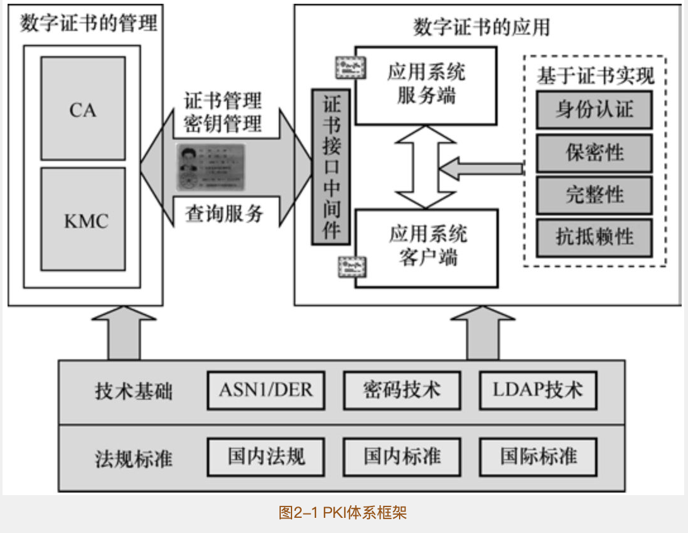
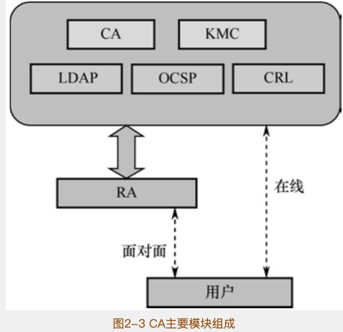
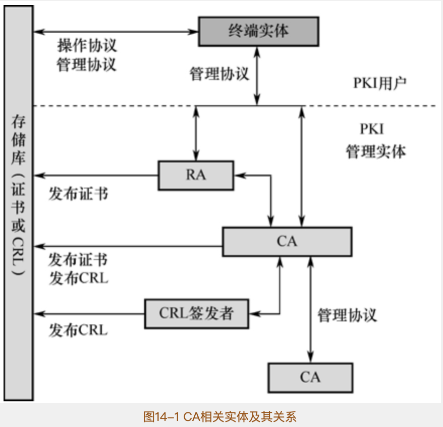
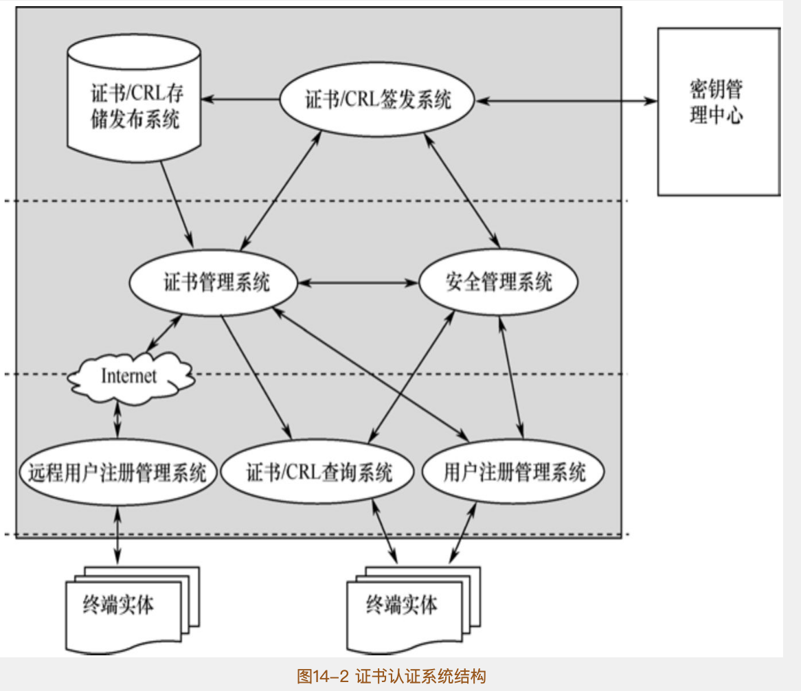
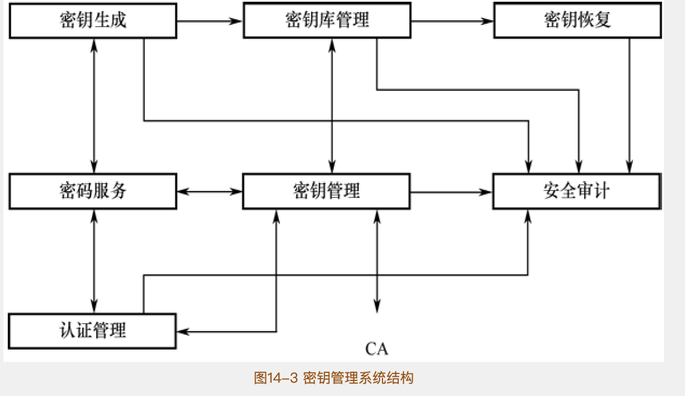
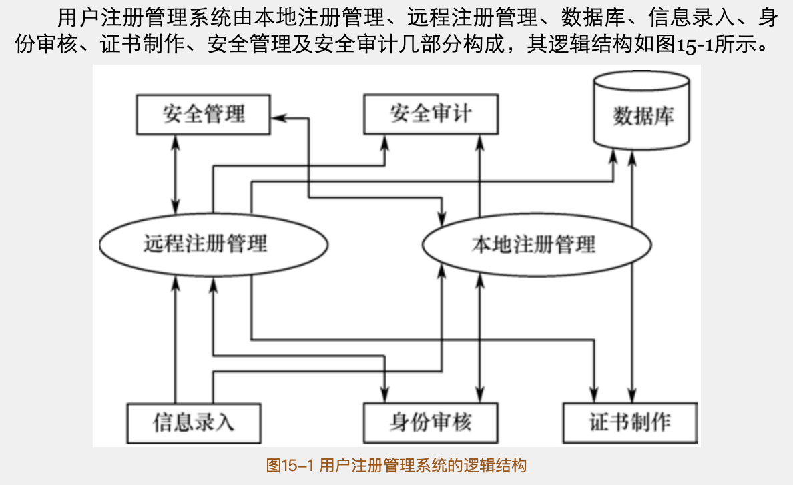
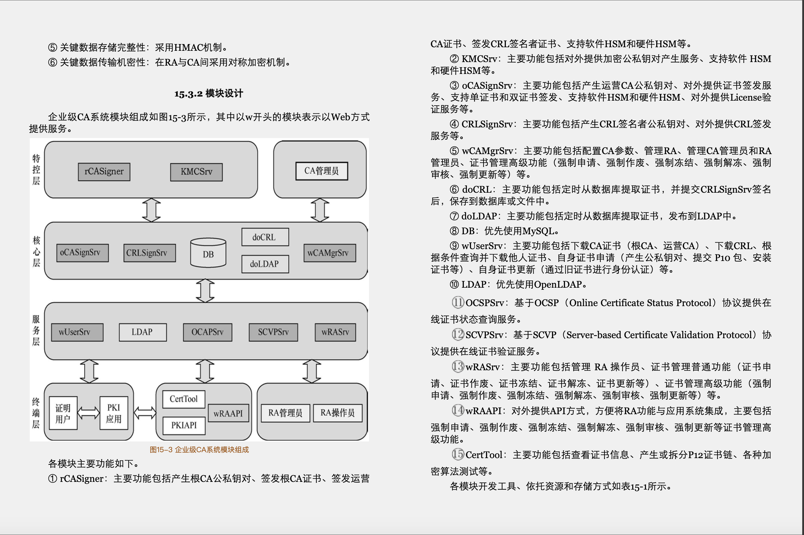
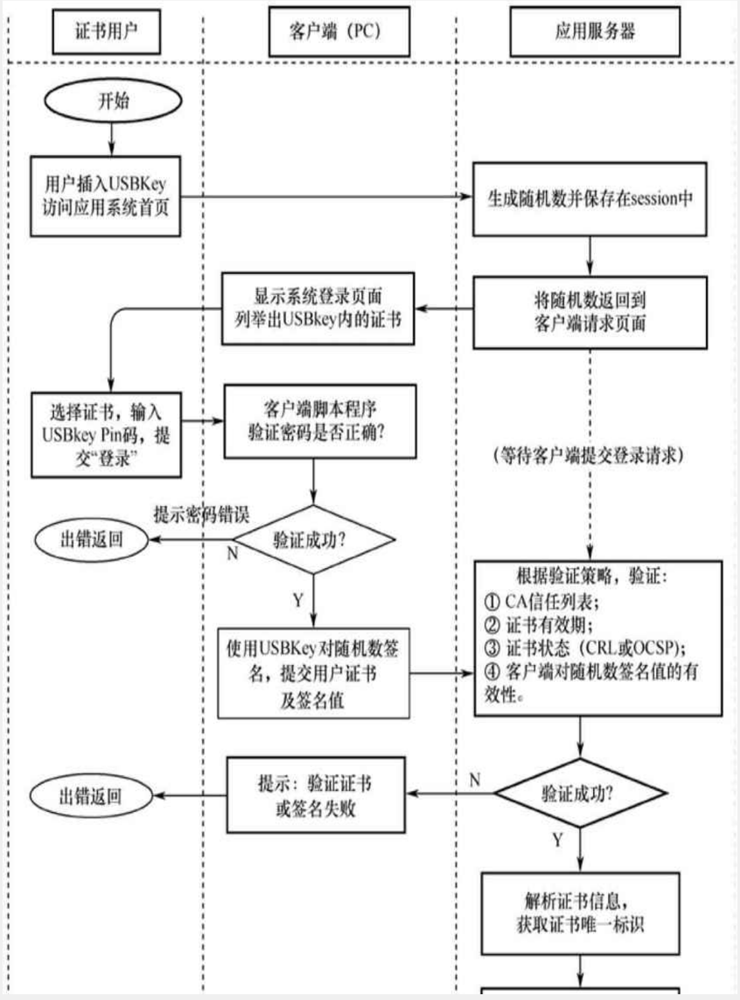
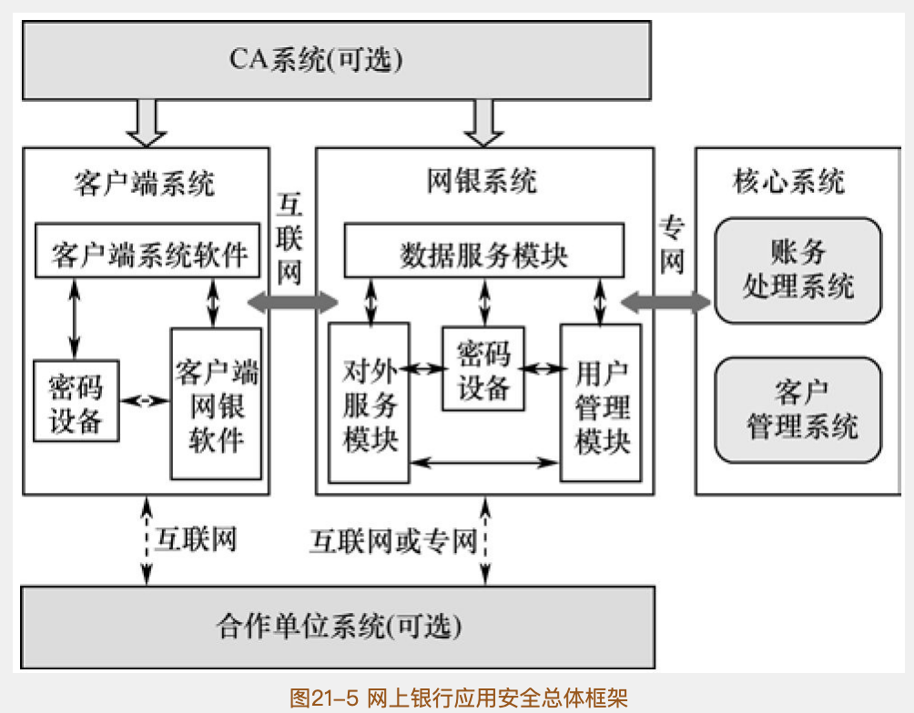
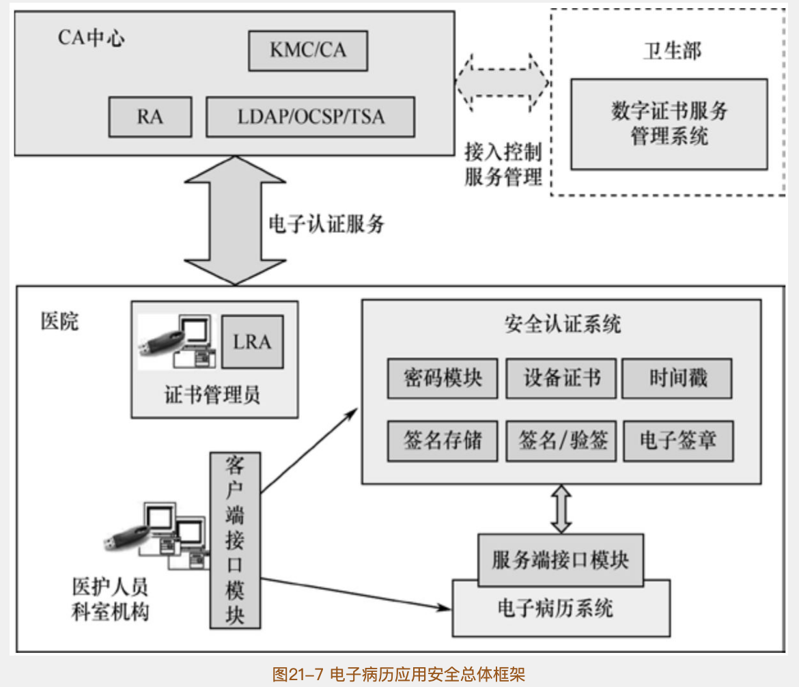

参考链接：
https://gx.jd.com/gx/gx_bookDetail.action?bookId=30344836
阅读结构
阅读笔记整体分为7个部分
- 1、基本概念，总览。整体性阐述了PKI/CA体系的概念和起源
- 2、PKI体系内容。包括数字证书与私钥，CA与KMC，PKI应用三大模块介绍
- 3、PKI技术基础。包括PKI基本编码规则，密码技术，LDAP技术
- 4、PKI证书与私钥包括公私钥与证书的规格，证书的分类、证书的存储、证书的访问等
- 5、PKI CA与KMC包括PKI体系系统结构、系统设计、对外服务设计、部署结构等
- 6、PKI应用设计包括常用应用设计，常见应用等
- 7、PKI/CA中心运营。仅做了解
- 8、相关法律法规。仅做了解。
关键点
- 整本书比较的偏底层，包括各种数学算法以及实现。对于我理解来说较为吃力，所以我更多从实用场景出发，主要理解这个玩意是啥，怎么用。唉，数学菜b
- 第5章节比较重点，主要介绍了企业级CA的实现，包括需求定义，功能模块，实现参考等
- 理解ASN.1编码
- 碰到不理解的证书字段时，来查（当手册用）
1 PKI总览
1.1 基本概念（PKI核心标准）
- PKI的本质是把非对称秘钥管理标准化
- PKI体系的本质是为了解决公钥和用户映射关系容易被篡改的问题。
- CA（Certificate Authority）是特殊的秘钥管理中心。拥有自己的公私钥，可以用自己的私钥给用户签发证书。
- 证书是一种特殊的文件格式，包括用户的身份信息、公钥信息、CA中心的签名
- LDAP（Light-weith Directory）是一个证书访问协议，支持TCP/IP，供用户请求和下载证书。
- CRL（Certificate Revocation List）记录了所有失效证书的清单。CA中心定期签名并生成CRL，并写入下次生成CSR的时间，可以供用户访问和下载。
- OCSP（Online Certificate Status Protocol）供用户实时查询证书的当前状态。（确保证书的时效性）
1.2 相关PKI标准
- 密码相关标准：ASN.1、DER、DES、AES、RSA、ECC等
- 证书应用标准：SSL/TLS、SET、WAP等
- 证书存储标准：PKCS系列标准，ISO 7816系列标准
- 证书访问标准：PKCS11、CryptoApi等
- CA运营标准 CP、CPS等
1.3相关法律
- 具有社会普遍公信的电子签名，需要由满足法律法规的CA以合法合规的方式制作。
- 对于PKI的使用和运营，如果不是内部使用而是对接公用，会有严格的限制和法律法规
2 PKI体系内容
2.1 数字证书与私钥

- 数字证书中不含私密信息，可以进行公开发布
- 数字证书可作为”网络身份证”来使用，流程如下：
- 1、验证数字证书是否伪造，通过验证签名是否合法
- 2、验证数字证书的可信度。通过验证证书的签发CA
- 3、验证数字证书是否在黑名单上。通过CRL或OCSP实现
- 4、验证证书是否和持证人一致。通过要求证书持有人，对特定的数据用私钥加密或签名，然后用公钥证书来验证。
- 5、自定义验证证书其他字段
- 数字证书可以附加很多策略，包括
- 有效期
- 秘钥用途。（该秘钥能够用来干嘛，数据签名、数据加密、签发证书、用户电子邮件等）
- 持有人或签发人的别名
- CRL地址
- 是否是CA中心的证书（以及如果是CA证书能否签发下级CA，能签发几级）
- CA中心拥有一张自签名证书。浏览器内置CA中心的证书来信任根证书。
- 为了保证私钥唯一性，可将私钥锁定在硬件设备里，无法导出，然后用公钥申请证书。
2.2 PKI/CA与KMC

- PKI引入CA来统一管理证书的生命周期，包括
- 证书的签发和更新。更新的公钥可以选择是否改变
- 数字证书的吊销、注销等
- 数字证书的挂失、解冻
- 数字证书的查询、下载。可通过HTTP或是LDAP
- 数字证书状态查询。相关协议有CRL和OCSP
- KMC（Key Management Center）用于管理私钥。可以KMC生成秘钥对，导出给用户，也可以用户生成秘钥对，导如到KMC
- 双证书机制：
- 为了保证用户私钥安全，可以区分两种私钥
- 签名证书专门用来签名，不提供备份恢复机制
- 加密证书专门用来加密数据，提供备份恢复机制
- LDAP LDAP是轻量级的目录访问协议，提供了证书的获取和下载功能
- CRL是定期生成的
- OCSP 为了解决CRL的失效性问题，可以供用户实时获取证书的最新状态
- RA（Registry Authority）注册中心可以专门用于提供证书的办理、证书材料申请、审核、制作证书、证书交付用户的功能。
2.3 PKI应用体系
- 证书可以实现
- 身份认证
- 保密性（公钥加密信息）
- 完整性 （签名文件，确保不被篡改）
- 不可抵赖性（可要求对方用私钥签名，然后自己保存原文。通过对方证书公钥验证签名是对方的）
- 数字证书与应用系统结合
- 操作系统登录
- 电子文件加密
- 电子印章/代码签名/时间戳
- 电子邮件加密
- 常见场景
- 网上报税
- 网上银行
2.4 PKI相关标准和法规
关键标准如下：
PKCS#1 RSA密码标准
PKCS#5 基于口令的密码标准
PKCS#7 密码消息标记语法
PKCS#8 私钥信息语法标准2.5 根CA信任模型
- 根CA之间可以互相签发证书达到两个根证书体系的互信
3 PKI基本技术
注：本章有些底层技术阅读的时候不甚理解，部分过于底层先知道怎么用，部分重要的可能需要动手做一做促进理解
3.1 ASN.1 编码
ASN.1(Abstract Syntax Notation One/抽象文法描述语言)是一种对于分布式系统中，信息交换的数据消息进行抽象描述的，规范化语言。ASN.1在设计的时候充分的考虑了数据结构的扩展性
使用场景
- 多种通讯协议
- SNMP 网络协议
- 北美、日本等地的电话协议编码
15种基本数据类型以及5种结构体数据类型
BER（Basic Encoding Rules）和DER（Distinguished Encoding Rules)编码
- BER编码有三种编码格式
- DER只有一种编码格式，适用于需求安全传输的系统
3.2 密码技术
对称加密算法
目前新系统推荐AES对称加密算法
非对称加密算法
主流为RSA和ECDSA算法
哈希算法
MAC
MAC（Message Authentication Code/消息认证码）（TLS通信中有所应用）
- 发送者和接收者协商好秘钥算法和秘钥
- 发送者将消息和MAC加密后发送给接收者
- 接收者接收到消息，用秘钥解析消息
- 接收者解析出MAC
- 接收者自己对消息做MAC算法，比对两个MAC的区别
OTP
One Time Password一次性密码。一般用于电子令牌等（例如那种周期性（30s/60s）刷新的电子令牌
验证流程：
- 用户和服务器协商好秘钥算法和秘钥
- 用户获取同步因子，使用已协商的秘钥和算法处理，生成OTP码
- 同步因子可以是时间同步、时间同步或是基于挑战应答机制
- 服务器获取当前用户的当前同步因子，使用已协商的秘钥和算法对其处理，生成新的OTP码
- 服务器比较两个OTP码
3.3 数字签名和数字信封
3.4 Base64编码
Base64编码可以将任意二进制字节编码成64个可打印的ASCII码字符
3.5 LDAP协议
LDAP这一章节讲的全是抽象概念，缺乏实际应用。目前对于自身实现的CA业务，仅存在数据库中。需要的话可以去多搜索下网上的LDAP介绍。
LDAP（Lightweight Directory Access Protocol）轻型目录访问协议。使用了ASN。1定义，是一个开放的，中立的，工业标准的应用协议，通过IP协议提供访问控制和维护分布式信息的目录信息。
好处：
- 维护目录结构，读效率高（适合读多写少的场景）
- 具有实体概念，可以与现实世界对应。（例如可以创建一个组织实体，对于一个员工的加入和离职处理方便）
- 提供了高可用的认证功能，被许多应用用来做认证
缺点：
- 比较繁杂
- 旧，用的少，示例就少
4 证书与私钥
4.1 RSA
本章主要是讲的是算法底层，暂时不了解
4.2 证书字段
主要是介绍了证书各个字段的用途，需要时详细看
x509证书包括了三个基本字段
- tbsCertificate 原始证书（包括持有者公钥，持有者信息，签发者信息，证书其他信息等）
- signatureAlgorithm 摘要算法和签名算法
- signatureValue 签名值
4.3 证书国内用扩展项
4.4 证书分类
1 根据持有者是否是CA分类
- 1.1 CA证书：CA证书可以给用户和其他CA签发证书
- 1.2 非CA证书：在证书的subjec中增加DN进行区分。例如OU=PERSON为个人证书，OU=UNIT是机构证书
- 个人证书（姓名、身份证、E-mail、电话等）
- 单位证书（名称、组织机构代码、E-mail、电话）
- 系统证书（域名，IP地址，系统公钥）
- web服务器证书
- 域控制器证书
- OCSP服务器证书
- 时间戳服务器证书
- VPN证书
2、根据秘钥产生类型分类
可通过KeyUsage、ExtKeyUsage扩展项来设置秘钥的用途
- 2.1 签名证书
- 只用于签名验签，不用于加密解密（安全、唯一）
- CA中心对其秘钥无控制权，秘钥必须在用户客户端产生和保管
- 2.2 加密证书
- 只用于加密解密，不用于签名校验
- 秘钥对必须由CA产生（备份恢复，行业监管）
3、根据用途分类
- SSL服务器证书
- SSL客户端证书
- 代码签名证书（对代码进行签名校验）
- Email证书（安全电子邮件）
4.5 证书和私钥的存储
证书保存格式
- DER文件格式。文件后缀为der或crt
- base64保存（字符串）
- PKCS#7文件，常见后缀名pb7
私钥保存形式
- PKCS#8格式
- PKCS#12格式，常见后缀pfx或p12
4.5 私钥和证书访问方式
讲的是，有个Crypto API 来管理证书和私钥。还是先放数据库吧。用盐和用户密码进行一次hash之后作为对称秘钥对私钥加密
5 CA与KMC 系统设计
5.1 系统结构


CA实体结构
- 1、CA相关实体
- 终端实体（持有证书用户，涉及他人证书的用户）
- CA
- RA
- CRL 签发者
- 存储库。可采用数据库或是LDAP方式
- 2、证书作废
- 3、操作协议（LDAP，HTTP等）
- 4、管理协议
- 注册（用户可以把申请证书的相关信息提交给CA或是RA）
- 初始化 在使用前需要正确的安装秘钥相关数据
- 签发证书
- 秘钥对恢复
- 秘钥对更新。所有的秘钥对都要定期更新生成新秘钥对，然后签发新证书
- 作废请求
- 交叉认证。两个CA互签交叉认证证书
CA系统结构
- 用户注册管理系统
- 证书申请
- 身份审核
- 证书下载
- 证书/CRL签发系统
- 证书/CRL存储发布系统
- 证书/CRL查询系统
- 证书管理系统
- 安全管理系统
KMC系统结构

- 秘钥生成
- 秘钥存储
- 秘钥分发
- 秘钥备份
- 秘钥更新
- 秘钥撤销
- 秘钥归档
- 秘钥恢复
5.2 系统设计
5.2.1 CA系统设计
总体设计原则：
- 标准化、模块化设计原则
- 各模块之间通信通过通过基于身份验证的安全通信协议
- RA、证书、CRL签发、秘钥管理可以设置独立的数据库
- 访问控制功能
- 安全审计功能
1、RA系统设计
系统功能
- 用户信息的录入。支持批量从外部导入的功能
- 用户信息的审核
- 用户证书的下载
- 安全审计（对系统的管理人员、操作人员操作日志进行查询、统计等）
- 安全管理（安全访问控制，核心数据备份）
- 多级审核
模块组成：

2、证书/CRL签发系统
- 证书生成与签发。（证书签发完成后，可以发布到LDAP服务器）
- 证书更新
- CRL的生成和签发
- 安全审计
- 管理人员、操作人员的操作日志进行查询、统计、报表和打印
- 数据一致性校验
- 安全管理
- 证书模板管理。不同的证书模板定义了不同的证书种类，证书模板包括相应种类的证书基本项与扩展项
- 证书的备份和归档
- 服务器安全配置/配置服务器可接受的主机访问列表
- 为子系统定义管理员，并且为管理员签发证书
- 数据库系统的配置
- CRL发布策略的配置
模块组成：
- 证书/CRL/用户信息 数据库
- LDAP目录服务器
- 安全管理
- 定期对数据库和目录服务器内容进行备份归档
- 对数据库和LDAP目录服务器中的数据做一致性检查
- 安全审计
3、证书/CRL存储发布系统
系统功能
- 证书/CRL存储
- 证书/CRL发布
- 安全审计
- 安全管理
- 数据一致性校验
模块组成
- 数据库
- 存放证书/CRL/用户其他信息
- 目录服务器：
- 主从服务器，配置在不同等级的安全区域
- 用户访问从目录服务器
- 签发完成的数据写入到主目录服务器
- 从目录服务器主从映射功能自动映射到从目录服务器中
- 安全管理
- 安全审计
4、证书/CRL查询系统
系统功能：
- CRL查询
- 在线证书状态查询
模块组成：
- 证书状态数据库/OCSP服务器。根据查询请求的证书序列号，从状态数据库检索状态数据
- 密码设备
- 安全管理
- OCSP服务器配置，定义可接受的访问控制信息，查询的证书状态数据库地址
- 启动/停止查询服务,配置可接受查询的用户请求数量
- 安全审计
5、证书管理系统
综合信息控制和服务调度系统，接受用户的各种请求，将请求提供给相应的独立子系统。
6、安全管理系统
- 安全审计系统
- 日志内容：
- 事件审计
- 操作员姓名
- 操作项目
- 操作起始/终止时间
- 证书序列号
- 操作结果
- 日志管理内容
- 日志查询
- 日志备份
- 日志处理/管理
- 安全防护系统
5.2.2 KMC系统设计
功能模块：
- 秘钥生成
- 秘钥管理
- 接收、审核CA的秘钥申请
- 接收、审查恢复秘钥申请并处理
- 操作人员身份权限认证
- 秘钥库管理
- 备用库、在用库、过期库管理
- 认证管理
- 安全审计
- 秘钥恢复
- 用户秘钥恢复
- 司法取证秘钥恢复
- 密码服务模块
- 国密算法支持
- 硬件设备支持
- 审计模块
5.2.3 企业级CA设计示例
CA系统分两种
- 运营型CA
- 企业自用CA
1、证书机制
- 证书分类
- 个人，单位，web，设备
- 业务状态
- 证书申请状态
- 已录入
- 审核通过
- 审核失败
- 已制作
- 证书作废状态
- 已录入作废申请
- 审核通过
- 审核失败
- 证书冻结状态
- 已录入
- 审核通过/失败
- 证书解冻状态
- 已录入
- 审核通过/失败
- 证书更新状态
- 已录入
- 审核通过/失败
- 以更新
- 证书申请状态
2、管理机制
- 三级管理：CA管理员、RA管理员、CA操作员
- CA管理员负责初始化CA，配置CA策略，管理RA，管理RA管理员、查询统计等
- RA管理员：管理RA操作员
- RA操作员
- 录入员。录入证书新建/更新申请信息
- 审核员
- 制作员
3、RA服务
- 证书申请、证书作废、证书刚更新、证书冻结、RA操作员管理、查询统计、RA策略管理
4、证书服务
- 证书下载、CRL下载、证书更新、双证书下载更新、证书查询、证书申请、证书作废/冻结
- OCSP/SOCSP服务，LDAP服务，证书验证服务
5、安全性
6、模块设计

5.2.4 双证书技术流程设计
5.3 OCSP/SOCSP服务
5.3.1 OCSP/SOCSP服务
SOCSP就是Simplae OCSP，协议请求和相应较为简化
5.3.2 CRL服务
CRL服务
CRL详细内容：需要就直接去翻书吧，这章主要介绍了CRL的一些字段
5.3.3 LDAP服务
5.4 CA 部署结构
- 这章介绍了多种CA的部署结构，但无一例外，结构都挺大，东西都挺多。
- 对于当前业务这种微服务来讲，可能能做到就是把东西全放到这一个服务里面去。
- 如果真要做这种分布式的CA，需要时再来研究吧，感觉现在看了没啥用
6 CA应用实例
6.1 CA基本用法
1、身份认证
用户的证书上记录了用户的信息，为了证明用户是证书的所有者，可以采用挑战应答模式进行身份认证。
- 服务端随机生成一个随机数
- 用户用自己的私钥对随机数签名，将签名和证书一起交给服务端
- 服务端校验签名、校验证书，确认用户的合法性

2、保密性
- 自己加密-自己解密
- 自己用别人公钥加密，别人用自己的私钥解密
3、完整性 - 发保密电子邮件点 时候，可以把邮件hash加密后，和电子邮件一起发过去
4、抗抵赖性
6.2 通用应用技术
本章的话先做理解，需要用到的时候详细再看
- SSL/TLS协议：安全传输协议（HTTP，TCP）
- IPSec协议：IP层安全协议
- Kerberos：身份认证协议
- TSP：时间戳协议
- 将数据的hash和时间值签名
- SET：安全电子协议（保证互联网在线交易时信用卡支付的安全性）
- 3-D Secure：简易电子交易安全性问题
- WAP 无线应用协议
- S/MIME Secure/Multipurpose Internet Mail Extensions（把internet实体封装成安全对象）
6.3 代码证书
- 可以对软件或是插件进行签名（需要代码签名用途的证书）
6.4 网上银行系统
主要需求
- 鉴别用户的个人身份和权限
- 交易数据的真实性和完整性
- 交易数据机密性
- 抗抵赖
- 审计
- 秘钥管理
架构示意：

6.5 网上报税系统
- 确保纳税人身份
- 确保数据的保密性和完整性
- 确保数据的法律效力
- 自主打印缴款凭证
6.5 电子病历系统
需求：
- 确定身份
- 责任归属
- 强调时间可信需求
- 安全完整传输

7 CA中心运营
8 相关法律法规
用到相关东西的时候，可以来翻翻
- 电子签名
- 电子认证
- 电子政务
- 商用密码